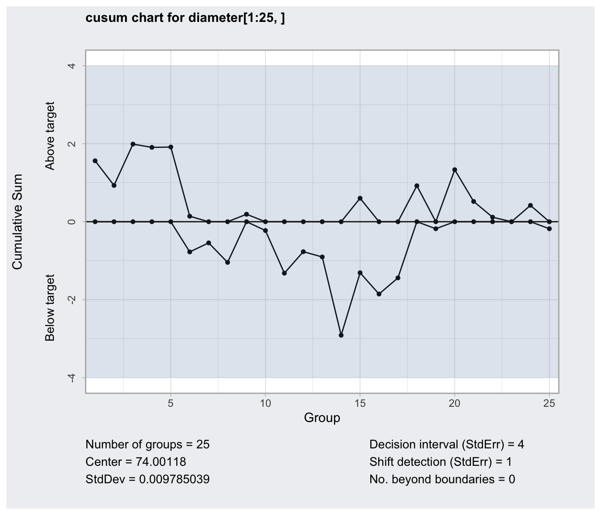

Cusum chart
Create an object of class 'cusum.qcc' to compute a Cusum chart for statistical quality control.
cusum(data, sizes, center, std.dev, head.start = 0,
decision.interval = 5, se.shift = 1, data.name, labels,
newdata, newsizes, newlabels, plot = TRUE, …)
# S3 method for cusum.qcc
print(x, digits = getOption("digits"), …)
# S3 method for cusum.qcc
plot(x, add.stats = TRUE, chart.all = TRUE, fill = TRUE,
label.bounds = c("LDB", "UDB"), title, xlab, ylab, ylim,
axes.las = 0, digits = getOption("digits"),
restore.par = TRUE, …)
Arguments
| data | a data frame, a matrix or a vector containing observed data for the variable to chart. Each row of a data frame or a matrix, and each value of a vector, refers to a sample or ''rationale group''. |
|---|---|
| sizes | a value or a vector of values specifying the sample sizes associated with each group. If not provided the sample sizes are obtained counting the non- |
| center | a value specifying the center of group statistics or the ''target'' value of the process. |
| std.dev | a value or an available method specifying the within-group standard deviation(s) of the process.
Several methods are available for estimating the standard deviation. See |
| head.start | The initializing value for the above-target and
below-target cumulative sums, measured in standard errors of the summary
statistics. Use zero for the traditional Cusum chart, or a positive
value less than the |
| decision.interval | A numeric value specifying the number of standard errors of the summary statistics at which the cumulative sum is out of control. |
| se.shift | The amount of shift to detect in the process, measured in standard errors of the summary statistics. |
| data.name | a string specifying the name of the variable which appears on the plots. If not provided is taken from the object given as data. |
| labels | a character vector of labels for each group. |
| newdata | a data frame, matrix or vector, as for the |
| newsizes | a vector as for the |
| newlabels | a character vector of labels for each new group defined in the argument |
| plot | logical. If |
| add.stats | a logical value indicating whether statistics and other information should be printed at the bottom of the chart. |
| chart.all | a logical value indicating whether both statistics for |
| fill | a logical value specifying if the in-control area should be filled with the color specified in
|
| label.bounds | a character vector specifying the labels for the the decision interval boundaries. |
| title | a string giving the label for the main title. |
| xlab | a string giving the label for the x-axis. |
| ylab | a string giving the label for the y-axis. |
| ylim | a numeric vector specifying the limits for the y-axis. |
| axes.las | numeric in {0,1,2,3} specifying the style of axis labels. See |
| digits | the number of significant digits to use. |
| restore.par | a logical value indicating whether the previous |
| x | an object of class 'cusum.qcc'. |
| … | additional arguments to be passed to the generic function. |
Details
Cusum charts display how the group summary statistics deviate above or below the process center or target value, relative to the standard errors of the summary statistics. Useful to detect small and permanent variation on the mean of the process.
Value
Returns an object of class 'cusum.qcc'.
References
Mason, R.L. and Young, J.C. (2002) Multivariate Statistical Process Control with Industrial Applications, SIAM.
Montgomery, D.C. (2005) Introduction to Statistical Quality Control, 5th ed. New York: John Wiley & Sons.
Ryan, T. P. (2000), Statistical Methods for Quality Improvement, 2nd ed. New York: John Wiley & Sons, Inc.
Scrucca, L. (2004). qcc: an R package for quality control charting and statistical process control. R News 4/1, 11-17.
Wetherill, G.B. and Brown, D.W. (1991) Statistical Process Control. New York: Chapman & Hall.
See also
Examples
## ## Grouped-data ## data(pistonrings) attach(pistonrings) diameter <- qcc.groups(diameter, sample) q <- cusum(diameter[1:25,], decision.interval = 4, se.shift = 1)summary(q)#> cusum chart for diameter[1:25, ] #> #> Summary of group statistics: #> Min. 1st Qu. Median Mean 3rd Qu. Max. #> 73.99 74.00 74.00 74.00 74.00 74.01 #> #> Group sample size: 5 #> Number of groups: 25 #> Center of group statistics: 74.00118 #> Standard deviation: 0.009785039 #> #> Decision interval (std.err.): 4 #> Shift detection (std. err.): 1q <- cusum(diameter[1:25,], newdata=diameter[26:40,])summary(q)#> cusum chart for diameter[1:25, ] #> #> Summary of group statistics: #> Min. 1st Qu. Median Mean 3rd Qu. Max. #> 73.99 74.00 74.00 74.00 74.00 74.01 #> #> Group sample size: 5 #> Number of groups: 25 #> Center of group statistics: 74.00118 #> Standard deviation: 0.009785039 #> #> Summary of group statistics in diameter[26:40, ]: #> Min. 1st Qu. Median Mean 3rd Qu. Max. #> 73.99220 74.00290 74.00720 74.00765 74.01270 74.02340 #> #> Group sample size: 5 #> Number of groups: 15 #> #> Decision interval (std.err.): 5 #> Shift detection (std. err.): 1plot(q, chart.all=FALSE)detach(pistonrings)